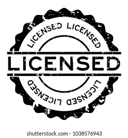

 

Prompt:
The DESCRIPTION file of a package contains the package’s meta information. Most of the fields in this file are quite straight forward: author, version number, and a short package description. When you call library(help="<package name>") for package <package name> you can see the contents of the DESCRIPTION file for that package (and some parts of the NAMESPACE file).
Read through Colin Fay’s (short) book on Licensing R
Write a blog post addressing the following questions:
Under what license does R operate? What is the license for ggplot2?
Today’s most common permissive licenses are the MIT and Apache licenses; older permissive licenses include the various forms of the BSD license. A copyleft license is typically the GPL, which allows you to freely modify and copy the code for your own personal use. However, you must also license the modified version or complete bundle with the GPL if you publish it or bundle it with other code. ggplot2 is licensed under the MIT + file license.
What are the dependencies of the package you made?
Read through chapter 5.2 of Licensing R. Combine and adjust the code pieces to create the dependencies for a package that is on github rather than CRAN. (Don’t forget about the package desc.) What dependencies does the package have that you created for Lab-3?
Once you’ve downloaded the package from GitHub, get package info with devtools::session_info() and filter for dependencies.Lab 3 Team 1’s package dependencies are listed below:
pkg_deps.package pkg_deps.ondiskversion
1 askpass 1.1
2 cli 3.6.0
3 cpp11 0.4.3
4 curl 5.0.0
5 dplyr 1.1.0
6 fansi 1.0.4
7 generics 0.1.3
8 glue 1.6.2
9 lifecycle 1.0.3
10 lubridate 1.9.2
11 magrittr 2.0.3
12 pdftools 3.3.3
13 pillar 1.8.1
14 pkgconfig 2.0.3
15 png 0.1-8
16 qpdf 1.3.2
17 R6 2.5.1
18 Rcpp 1.0.10
19 rJava 1.0-6
20 rlang 1.1.0
21 stringi 1.7.12
22 stringr 1.5.0
23 sys 3.4.1
24 tabulizer 0.2.3
25 tabulizerjars 1.0.1
26 Team1 0.0.0.9000
27 tibble 3.2.0
28 tidyselect 1.2.0
29 timechange 0.2.0
30 utf8 1.2.3
31 vctrs 0.5.2
32 withr 2.5.0Which licenses are involved? Are all of these dependencies required? Elaborate. It’s under the MIT license. Apparently there are more dependencies than I remember, but perhaps these are dependencies from the libraries we used.
Under which license should this blog post be published? Make sure that you are using an appropriate license. (You can change the current licenses with the help of commands from the use_license_XXX family in the usethis package)
We’re using license CC0 1.0 Universal in our LICENSE file. Various licenses give the user enough information about the repository and its files. In addition to allowing users to understand what parts or files can be used by them, the license also protects the author’s rights. Changing the license type is possible, but I won’t. The Creative Commons license family uses CC as a keyword.
Can I publish an R package on CRAN under an MIT license when I have a dependency on a package that is licensed under GPL-3?
When confronted with the above question, ChatGPT gave two – quite different – responses, as shown below. The main point in both responses is ‘your package may be considered derivative work’. At the specific problem of the package developed for Lab 3, what is your opinion about potential copyright infringements when releasing the package with an MIT license? Make sure to take the relevant passage in Colin Fay’s book under consideration.
Based on Colin Fay’s book, I understood that GPL-3 licensed packages are compatible and accepted by CRAN. It is therefore possible to publish it in CRAN, but it must be approved by all contributors. Conversations and permission announcements can happen on Github between the contributors. Just pointed out what was in the book that wasn’t in the following information from ChatGPT.
The legal implications of publishing an R package on CRAN under an MIT license while having a dependency on a package that is licensed under GPL-3 are complex and can vary depending on the specific circumstances. It is always advisable to seek legal advice from a licensed attorney if you have any doubts or concerns about licensing issues.
However, in general, it is possible to publish an R package on CRAN under an MIT license when you have a dependency on a package that is licensed under GPL-3. This is because the MIT license is a permissive open-source license that allows for more flexibility in how the software can be used and distributed, and it is generally considered compatible with the GPL-3 license.
That being said, if your package depends on a GPL-3-licensed package, your package may be considered a derivative work and therefore subject to the terms of the GPL-3 license. This means that if you distribute your package, you may need to also distribute the source code for your package under the GPL-3 license or a compatible license, and you may need to ensure that the requirements of the GPL-3 license are met for the entire distribution, including any dependencies.
It is also worth noting that the R community has its own guidelines and recommendations for package licensing, and it is important to comply with these guidelines if you want to publish your package on CRAN. The CRAN Repository Policy states that packages should have a "permissive" or "GPL-compatible" license, but does not explicitly require that packages use the GPL license or any other specific license.
In summary, while it is possible to publish an R package on CRAN under an MIT license while having a dependency on a package that is licensed under GPL-3, it is important to understand the implications of the different licenses and to ensure that you comply with any applicable guidelines and recommendations from the R community.After harping a bit on copyright infringement in general, ChatGPT changed its response to
Technically, you can publish an R package on CRAN under an MIT license when you have a dependency on a package that is licensed under GPL-3, but doing so would not be compliant with the terms of the GPL-3 license.
The GPL-3 license is a strong copyleft license that requires derivative works to be released under the same license. If your package depends on a GPL-3-licensed package, your package may be considered a derivative work and therefore must be licensed under the GPL-3 license or a compatible license.
The MIT license, on the other hand, is a permissive license that allows for more flexibility in how the software is used and distributed. However, it is not compatible with the GPL-3 license, and therefore cannot be used for derivative works of GPL-3-licensed software.
Publishing an R package on CRAN under an MIT license when you have a dependency on a package that is licensed under GPL-3 would be a licensing violation, and could potentially result in legal action or other consequences. It is important to comply with the licensing requirements of all dependencies in your package to avoid any legal issues.The ‘harping’ questions:
Is it legal to publish an R package on CRAN under an MIT license when I have a dependency on a package that is licensed under GPL-3?
Is it illegal to publish an R package on CRAN under an MIT license when I have a dependency on a package that is licensed under GPL-3?
Is it a copyright infringement to publish an R package on CRAN under an MIT license when I have a dependency on a package that is licensed under GPL-3?
Can I publish an R package on CRAN under an MIT license when I have a dependency on a package that is licensed under GPL-3 without infringing copyright?
Submission
Write answers to the questions directly into the file README.Rmd. Push the blog post to your blog-7 repo. Make sure that all of the checks are passing..
Reuse
Citation
@online{motina2023,
author = {Motina},
title = {La La La License},
date = {2023-03-09},
langid = {en}
}